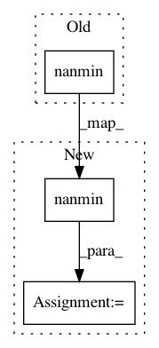

304fb9ee4fb1adc49ecea7dc9aeaf2c40a5a77fe,pyannote/audio/signal.py,Binarize,apply,#Binarize#Any#Any#,416
Before Change
start = timestamps[0]
label = data[0] > self.onset
mini = np.nanpercentile(data, 1) if self.percentile else np.nanmin(data)
maxi = np.nanpercentile(data, 99) if self.percentile else np.nanmax(data)
onset = mini + self.onset * (maxi - mini)
offset = mini + self.offset * (maxi - mini)
After Change
maxi = 1
elif self.scale == "relative":
mini = np.nanmin(data)
maxi = np.nanmax(data)
elif self.scale == "percentile":
mini = np.nanpercentile(data, 1)
In pattern: SUPERPATTERN
Frequency: 3
Non-data size: 3
Instances
Project Name: pyannote/pyannote-audio
Commit Name: 304fb9ee4fb1adc49ecea7dc9aeaf2c40a5a77fe
Time: 2018-06-29
Author: bredin@limsi.fr
File Name: pyannote/audio/signal.py
Class Name: Binarize
Method Name: apply
Project Name: pyannote/pyannote-audio
Commit Name: 304fb9ee4fb1adc49ecea7dc9aeaf2c40a5a77fe
Time: 2018-06-29
Author: bredin@limsi.fr
File Name: pyannote/audio/signal.py
Class Name: Peak
Method Name: apply
Project Name: danforthcenter/plantcv
Commit Name: 837797c3c0ec654503a86d6d02c50612f5399922
Time: 2020-03-03
Author: haleyschuhl@gmail.com
File Name: plantcv/plantcv/hyperspectral/analyze_index.py
Class Name:
Method Name: analyze_index